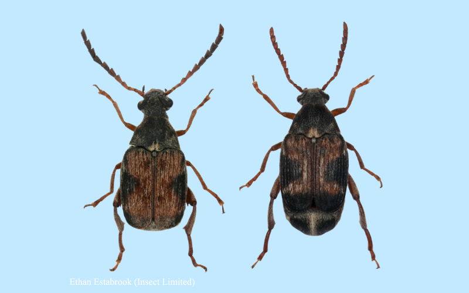
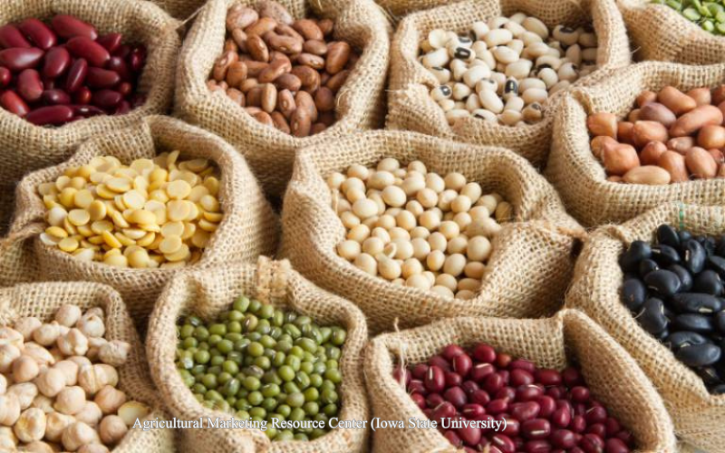

2025 BES Award
“The BES Award recognises exceptional service to the Society. It highlights the winner’s tireless efforts to support the Society’s work in a voluntary capacity.”
— British Ecological Society
Evolutionary and Behavioral Ecology
“The BES Award recognises exceptional service to the Society. It highlights the winner’s tireless efforts to support the Society’s work in a voluntary capacity.”
— British Ecological Society

"This award is presented to a faculty member for the most prestigious original research paper published during the five years preceding the award year while employed at UK."
— Martin-Gatton College of Agriculture, Food and Environment

Double-blind peer review affects reviewer ratings and editor decisions at an ecology journal

The Fox Lab primarily works with bean beetles (Chrysomelidae: Bruchinae). These beetles are an excellent model system for laboratory maintenance and experimental manipulation due to their life history and lack of food or water requirements.

Females will cement their eggs to the beans, then offspring will burrow in and feed until maturation. Adult beetles will emerge from the beans, mate, lay eggs and continue the cycle.

The colonies in our lab are reared and maintained on two different types of legumes:
Mung beans (Vigna radiata)
Black-eyed peas (Vigna unguiculata)

In the past, the Fox Lab has worked with other types of seed beetles, bess beetles, subtropical blowfly, locus borer, dung beetle and red/black beetle.


Our lab explores the ecology and evolution of life history traits, such as body size, sexual size dimorphism, egg size, phenotypic plasticity, aging and senescence, maternal effects, and inbreeding depression. We also study insect–plant interactions, focusing on diet evolution and adaptation to host plants, as well as insect behavioral ecology, including egg-laying decisions and sexual selection on body size and dimorphism.